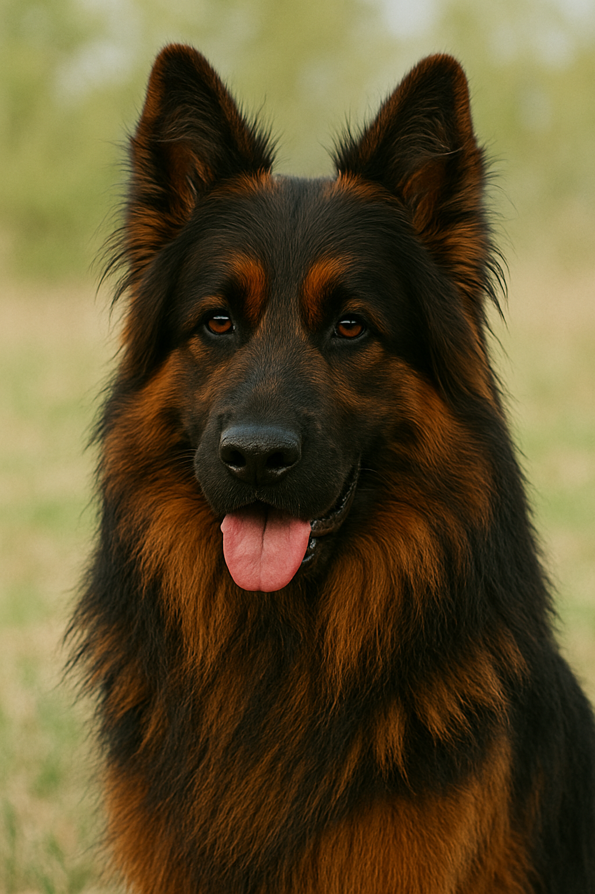

The long-haired German Shepherd is a variety of the classic German Shepherd, but with long, silky hair. Personally, I like the breed with a rich black coat and red or golden highlights.
The long-haired German Shepherd is an intelligent, loyal, and well-balanced dog. It is highly intelligent and easy to train (it learns commands quickly) and has a well-developed protective instinct. The Shepherd has a good guarding instinct (wary of strangers and determined to protect its owner) but at the same time is kind to children and family members. This breed of dog is very emotionally attached to people and needs attention, warmth, and a stable environment. It does not like to be left alone for long periods of time.
Long-haired sheepdogs are energetic, active dogs that need physical and mental stimulation. They require:
If such a dog is left without attention, exercise, and training, behavioral problems may arise.